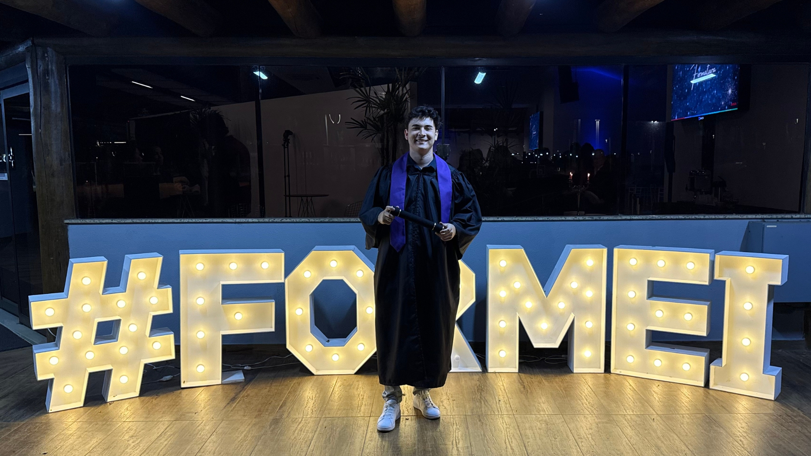

Ensino Médio 2020-2022
Realizei minha formação no Ensino Médio no Unasp Campus Hortolândia, onde adquiri diversos conhecimentos e aprendizagens.
Olá, meu nome é Leonardo Taborda tenho 20 anos e atualmente trabalho como Meio Oficial em Soluções Digitais na Bosch Campinas. Sou formado em Desenvolvimento de Sistemas pelo SENAI 'Roberto Mange' e também estou cursando uma faculdade de Gestão de Energia e Eficiência Energética na FATEC Campinas.
Sempre fui apaixonado por aprender coisas novas, e fora do trabalho e dos estudos, gosto de me aprofundar em meus conhecimentos de Design, além de gostar de praticar esportes e passar um tempo com minha familia. Bom, acredito que combinar diferentes habilidades, desde a parte técnica até a experiência do usuário, é o que permite enxergar soluções inovadoras e funcionais para os desafios do dia a dia.
Estou sempre em busca de me desenvolver e adquirir novos conhecimentos, e mal posso esperar para ver até onde essa jornada me levará!
Soluções inovadoras que otimizam processos digitais, sempre buscando a eficiência e o impacto positivo nas operações empresariais.
Criação de software de alta performance, focado em automação de processos e melhoria contínua.
Desenvolvimento de aplicativos intuitivos e funcionais, focados em proporcionar a melhor experiência ao usuário.
Experiência em design de interfaces e experiências de usuário, criando layouts atraentes e funcionais para diversas plataformas.
Expertise em otimização de energia, implementando soluções sustentáveis e eficientes para economizar recursos.
Desenvolvimento de estratégias de comunicação que fortalecem o posicionamento da marca, geram conexão autêntica com o público e ampliam o alcance da mensagem.
Estou sempre em busca de novos desafios e oportunidades para crescer. Com 20 anos, já acumulei experiência em soluções digitais na Bosch Campinas, onde desenvolvi uma forte base em Programação Front End e Design. Me formei recentemente em Desenvolvimento de Sistemas no SENAI "Roberto Mange" e Gestão de Energia e Eficiência Energética na FATEC Campinas, o que me permite unir tecnologia e sustentabilidade.
Além disso, tenho experiências em UI/UX Designer, buscando sempre criar experiências intuitivas e agradáveis para os usuários. Sempre procuro aplicar meus conhecimentos para contribuir em projetos inovadores que façam a diferença.Formado como Técnico em Informática, desenvolvi habilidades em programação, manutenção de sistemas e suporte técnico,
preparando-me para enfrentar os desafios do mundo digital. Conheça mais sobre o Campos:
Durante um período meu na Bosch Campinas trabalhei como aprendiz em soluções digitais, onde adquiri experiência prática em projetos de inovação e desenvolvimento de tecnologia. Já conclui o período de aprendizagem e seu formado hoje pela ETS & Bosch Campinas.
Atualmente atuo como Meio Oficial em Soluções Digitais focado em UI/UX Designer, Programação Front End com React e Next, e Modelagem 3D com Blender.
Estou cursando Gestão de Energia e Eficiência Energética na FATEC Campinas, onde aprendo a aplicar práticas sustentáveis e a melhoria do uso de recursos energéticos. Conheça um pouco mais sobre meu curso e a Fatec Campinas:
Ver maisEm Junho de 2025 me formei no SENAI "Roberto Mange", com parceria com a Bosch, onde aprimorei meus conhecimentos e aprendi ferramentas essenciais para o mercado. Essas são algumas das habilidades que desenvolvi ao longo da formação:
Conheça mais sobre o spanSENAI "Roberto Mange" e explore seus cursos disponíveis, clique em "Ver mais".
Ver maisRealizei diversos cursos pela plataforma Udemy, abordando áreas como Design, Marketing Digital, Comunicação, Excel avançado, entre outros. Esses conhecimentos complementares foram fundamentais em vários momentos da minha jornada, contribuindo diretamente para a entrega de projetos com mais estratégia, criatividade e eficiência. Explore mais sobre a Plataforma Udemy:
UdemyTambém concluí — e sigo realizando — formações na plataforma Alura, com foco em áreas como Gestão de Pessoas, Comunicação, Modelagem 3D, Estilização com SASS, Product Design, entre outras. Esses cursos têm expandido minha visão multidisciplinar, permitindo que eu atue com mais estratégia, criatividade e fluidez em projetos que envolvem tanto tecnologia quanto pessoas. Conheça a Plataforma da Alura:
AluraRealizei minha formação no Ensino Médio no Unasp Campus Hortolândia, onde adquiri diversos conhecimentos e aprendizagens.
Comecei minha jornada na área de tecnologia, adquirindo conhecimentos em programação, manutenção de sistemas e suporte técnico, o que me proporcionou uma base sólida para a carreira que desejava seguir.
Decidir expandir meu conhecimento e me especializar em práticas sustentáveis, aprendendo a otimizar o uso de recursos energéticos e contribuir para um futuro mais sustentável.
Iniciei minha experiência profissional na Bosch Campinas como aprendiz em Soluções Digitais, onde tenho a oportunidade de aplicar meus conhecimentos em um ambiente de inovação e tecnologia.
Atualmente, estou me formando em Desenvolvimento de Sistemas no SENAI, onde estou aprimorando minhas habilidades em programação e desenvolvimento de software.
Atualmente, estou me formando em Desenvolvimento de Sistemas no SENAI, onde estou aprimorando minhas habilidades em programação e desenvolvimento de software.

Leia sobre o Senai R. Mange e descubra os cursos que estão disponíveis para a matrícula.

Veja mais sobre o curso de G3'E.

Veja mais como funciona a escola adventista de Hortolândia e mais sobre o curso.